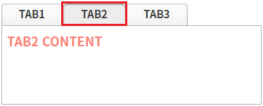
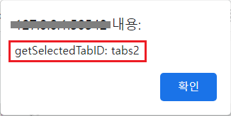
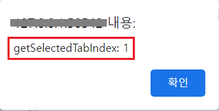
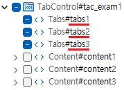

TabControl의 선택된 탭의 ID 또는 탭의 Index를 반환받는 예제입니다. 이 기능은 아래의 함수를 통해 사용할 수 있습니다. - getSelectedTabID: 선택된 탭의 ID를 반환합니다. - getSelectedTabIndex: 선택된 탭의 Index를 반환합니다.
선택된 탭의 ID 반환받기
선택된 탭의 Index 반환받기
STEP 1. 초기 상태를 확인합니다.
TabControl의 두 번째 탭이 선택된 상태입니다.
그림 1.브라우저(Chrome) 실행 예시

STEP 2. 선택된 탭의 ID를 확인합니다.
버튼 선택된 탭의 ID 반환받기를 클릭합니다.STEP 3. 실행된 결과를 확인합니다.
선택된 탭의 ID가 브라우저 alert으로 출력됩니다. 출력 값 : 'getSelectedTabID: tabs2'
그림 2.브라우저(Chrome) 실행 예시

STEP 1. 초기 상태를 확인합니다.
TabControl의 두 번째 탭이 선택된 상태입니다.
그림 3.브라우저(Chrome) 실행 예시
STEP 2. 선택된 탭의 Index를 확인합니다.
버튼 선택된 탭의 Index 반환받기를 클릭합니다.STEP 3. 실행된 결과를 확인합니다.
선택된 탭의 Index가 브라우저 alert으로 출력됩니다. 출력 값 : 'getSelectedTabIndex: 1'
그림 4.브라우저(Chrome) 실행 예시

TabControl의 함수 'getSelectedTabID'를 이용하여 스크립트를 작성합니다. 세부 지정은 아래의 스크립트 예시에 작성되어 있습니다.
스크립트
//예제 파일에서는 스크립트 scwin.btn_exam1_1_onclick에 작성되어 있습니다. // TabControl 'tac_exam1'의 선택된 탭의 ID를 반환받습니다. let result = tac_exam1.getSelectedTabID(); // 반환 값 예시) 'tabs2'
반환되는 TabControl의 탭의 ID 값은 함수 'addTab'의 첫 번째 인자에 할당한 값 또는 하드 코딩으로 구성한 탭의 ID입니다.
그림 5.웹스퀘어5 SP5 스튜디오의 뷰 Outline의 탭 Design 예시

TabControl의 함수 'getSelectedTabIndex'를 이용하여 스크립트를 작성합니다. 세부 지정은 아래의 스크립트 예시에 작성되어 있습니다.
스크립트
//예제 파일에서는 스크립트 scwin.btn_exam1_2_onclick에 작성되어 있습니다. // TabControl 'tac_exam1'의 선택된 탭의 Index를 반환받습니다. let result = tac_exam1.getSelectedTabIndex(); // 반환 값 예시) 1
getSelectedTabID( )
getSelectedTabIndex( )
[웹스퀘어5 SP5 개발 가이드] TabControl
링크 : https://docs1.inswave.com/sp5_user_guide/2059d4ce88b2fc16#0eeccc9d7fde2d33
[웹스퀘어5 SP5 개발 가이드] TabControl 주요 API
링크 : https://docs1.inswave.com/sp5_user_guide/2059d4ce88b2fc16#bcee1eaa8a7baf3b